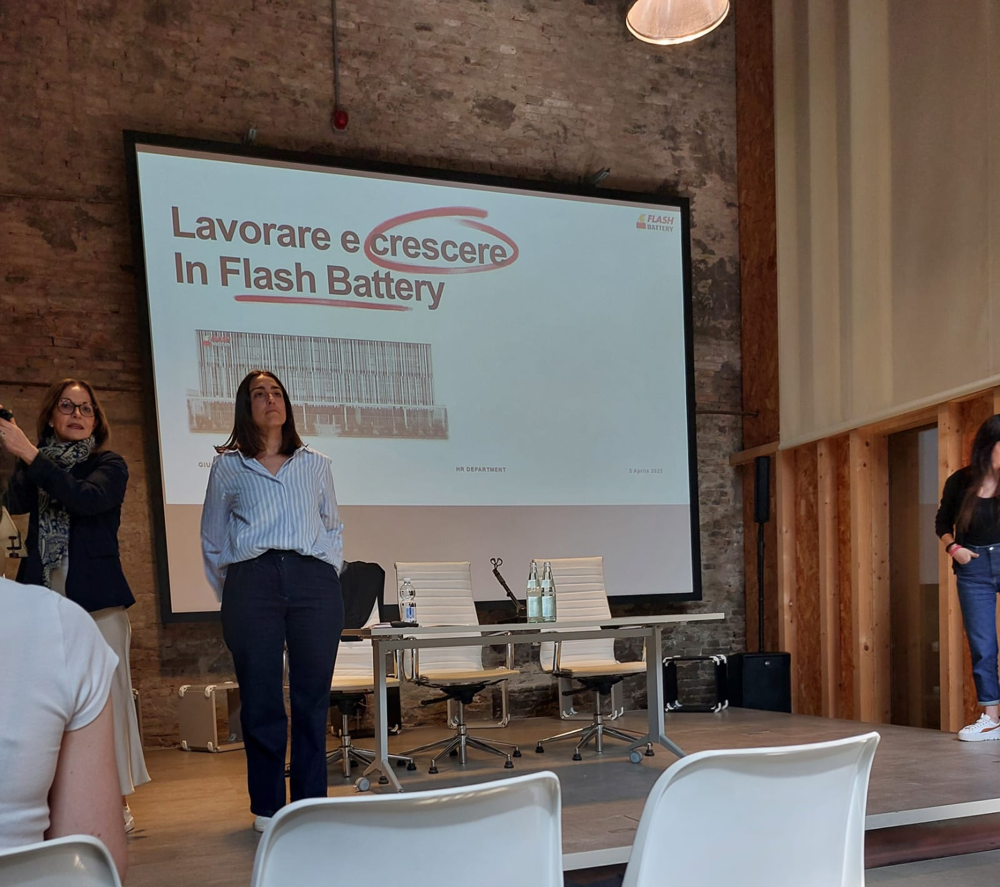

Cos'è
Unindustria Reggio Emilia è l'associazione territoriale di Confindustria che rappresenta circa 1.000 imprese manifatturiere e di servizi della provincia di Reggio Emilia. Si occupa di supportare le aziende associate attraverso servizi di consulenza, progetti di innovazione, attività di rappresentanza istituzionale e iniziative formative su temi come credito, finanza, internazionalizzazione, sostenibilità e trasformazione digitale.
L'incontro

L'incontro è stato condotto da due impiegate delle risorse umane dell'azienda Flash Battery, specializzata nella produzione di batterie per macchine e veicoli industriali. Per iniziare, ci hanno spiegato in modo chiaro che cos'è un curriculum vitae e ci hanno dato indicazioni pratiche su come impostarlo correttamente per valorizzare le nostre esperienze e competenze.
A ciascun partecipante è stato consegnato un foglio suddiviso nelle sezioni tipiche di un CV, con suggerimenti su cosa scrivere e come farlo in maniera efficace. Sul retro del foglio erano presenti le stesse sezioni lasciate vuote, da compilare in autonomia, con la possibilità di ricevere supporto e consigli personalizzati durante la stesura.
Dopo aver terminato il lavoro sul curriculum, ci hanno illustrato come funziona un colloquio di lavoro, spiegandoci cosa aspettarci e quali strategie utilizzare per presentarsi al meglio. Hanno anche dato consigli su come gestire le emozioni durante il colloquio, su quali comportamenti evitare e su quali domande è opportuno rivolgere al recruiter per lasciare una buona impressione.
Commento
Ho trovato questa attività nel complesso abbastanza utile, soprattutto per quanto riguarda i consigli su come affrontare un colloquio di lavoro, un ambito in cui sentivo di avere più lacune e bisogno di suggerimenti pratici. La parte dedicata alla stesura del curriculum è stata interessante, ma personalmente non mi ha apportato particolari novità, avendo già realizzato un mio CV in passato. Nonostante ciò, è stato comunque utile rivedere alcuni concetti fondamentali.
Competenze attivate
Trasversali
- Competenza in materia di consapevolezza ed espressione culturali
- Competenza in materia di cittadinanza
- Miglioramento delle competenze: gli studenti acquisiscono competenze pratiche e teoriche utili per la ricerca di lavoro
- Maggiore consapevolezza: comprensione delle dinamiche del mercato del lavoro e delle aspettative dei datori di lavoro